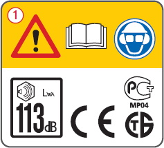
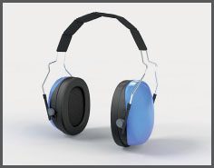
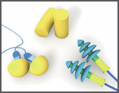
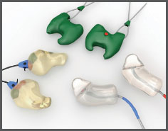

- Ermittlung der Schallquelle in dB(A), z. B. Kennzeichnung der Maschine
 ,
, - Ermittlung der schalldämmenden Eigenschaften des Gehörschutzes (Herstellerinformation),
- Berechnung für einen geeigneten Gehörschutz.
Gehörschutz |
| Dämmwerte der Gehörschützer | |
| SNR-Wert | (Single Number Rating = Einzelschalldämmwert) |
| H-Wert | (High = Dämmwert für hohe Frequenzen) |
| M-Wert | (Medium = Dämmwert für mittlere Frequenzen) |
| L-Wert | (Low = Dämmwert für tiefe Frequenzen) |
Auslösewerte
Kennzeichnung einer Kettensäge:

| Geringe Schalldämmung von Gehörschützern in der Praxis | |
| Tatsächliche Schutzwirkungen von Gehörschützern werden in der Praxis meist nicht erreicht. Als Korrekturwerte KS für die Benutzung von Gehörschutz in der Praxis werden verwendet: | |
| Vor Gebrauch zu formende Gehörschutzstöpsel | KS = 9 dB |
| Mehrfach verwendbare Gehörschutzstöpsel | KS = 5 dB |
| Bügelstöpsel | KS = 5 dB |
| Gehörschutzkapseln | KS = 5 dB |
| Otoplastiken mit Funktionskontrolle* | KS = 3 dB |
| Beispiele für Anforderungen, die ein Gehörschutz erfüllen muss: | |||
| Bei Gehörschutzstöpseln | Bei Gehörschutzkapseln | Bei Otoplastiken | |
| 100 dB(A) Schallpegel + 9 dB(A) Korrekturwert |
100 dB(A) Schallpegel + 5 dB(A) Korrekturwert |
100 dB(A) Schallpegel + 3 dB(A) Korrekturwert |
|
| 109 dB(A) - 80 dB(A) Restschallpegel** | 105 dB(A) - 80 dB(A) Restschallpegel** | 103 dB(A) - 80 dB(A) Restschallpegel** | |
| 29 dB(A) Schalldämmwert | 25 dB(A) Schalldämmwert | 23 dB(A) Schalldämmwert | |
*Funktionskontrolle vor erster Verwendung und danach mindestens alle 3 Jahre.
**Ziel der Auswahl ist das Erreichen eines Restschallpegels von 70 - 80 dB(A) bzw. < 135 dB (Cpeak)
Zur Hygiene

Kapselgehörschützer

Gehörschutzstöpsel

Otoplastiken
07/2021